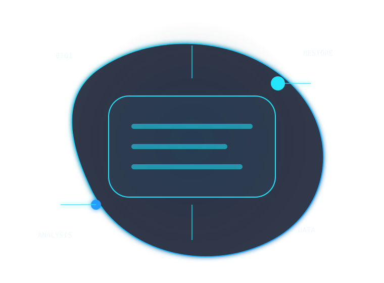
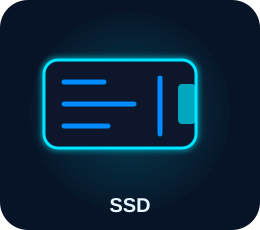
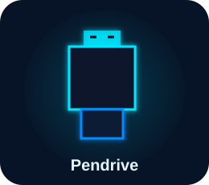
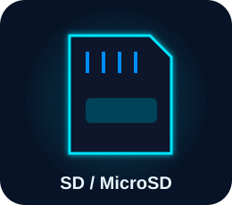
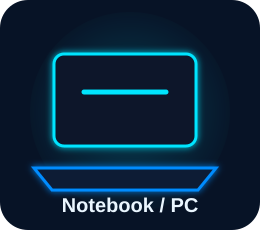
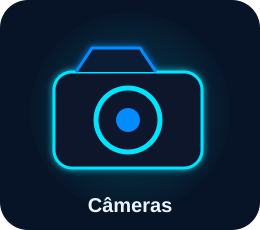

Recuperação de arquivos apagados
Atuação em casos de exclusão acidental de fotos, vídeos, documentos, planilhas, projetos e outros arquivos digitais importantes.
Recuperação e análise responsável de dados digitais em HDs, SSDs, pendrives e cartões de memória.

Quando um arquivo é apagado ou um dispositivo apresenta falha, continuar usando o equipamento pode reduzir as chances de recuperação. Evite instalar programas, copiar novos arquivos ou formatar novamente.
Atendimento focado em recuperação lógica, análise cuidadosa e orientação responsável.
Atuação em casos de exclusão acidental de fotos, vídeos, documentos, planilhas, projetos e outros arquivos digitais importantes.
Avaliação de computadores que apresentam falhas de inicialização, sistema corrompido ou dificuldade de acesso aos arquivos salvos.
Análise da possibilidade de recuperação após formatação indevida, alteração de partição ou perda inesperada da estrutura de arquivos.
Avaliação e recuperação de dados em HDs, SSDs e dispositivos que apresentam erros de leitura, arquivos inacessíveis ou falhas no armazenamento.
Trabalhamos com diferentes mídias de armazenamento digital, sempre com análise individual do caso.





Um fluxo simples, transparente e voltado à preservação das informações.
Você relata o que aconteceu, qual dispositivo foi afetado e quais arquivos são mais importantes.
As informações são analisadas para entender o cenário e orientar os próximos passos com segurança.
O dispositivo é avaliado com procedimentos cuidadosos, evitando alterações desnecessárias nos dados.
Você recebe uma resposta clara sobre as possibilidades, limitações e orientações recomendadas.
Fotos, documentos e informações pessoais são tratados com responsabilidade, sigilo e cuidado durante todo o atendimento.
As informações do cliente são tratadas com discrição e responsabilidade.
O processo busca evitar ações que possam prejudicar os dados originais.
A possibilidade de recuperação depende do tipo de falha e do estado do dispositivo.
Quanto mais o dispositivo é utilizado após a perda dos arquivos, maior pode ser o risco de sobrescrever informações importantes. Interromper o uso ajuda na avaliação.
Preencha os campos. Ao enviar, o WhatsApp será aberto com uma mensagem organizada para facilitar a avaliação do seu caso.
Importante: não há promessa de recuperação garantida. Cada caso depende das condições do dispositivo e do que ocorreu após a perda dos arquivos.